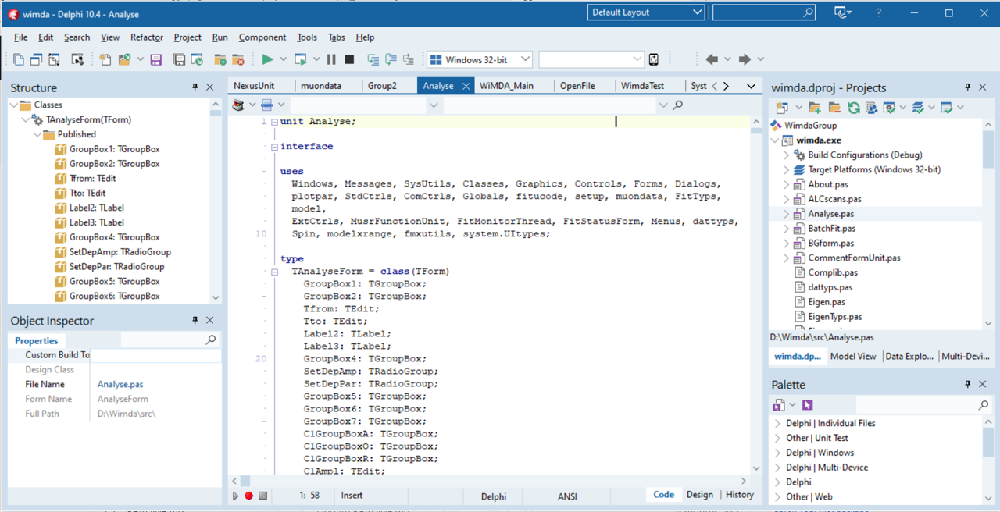
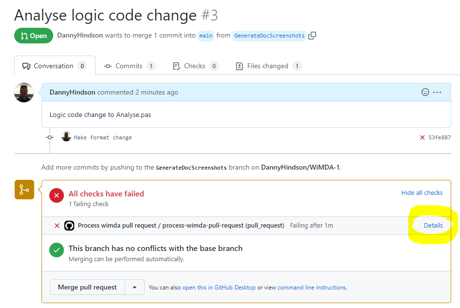

WiMDA Developer Setup
These notes explain how to set up a WiMDA development environment.
Delphi IDE
At the time of writing the WiMDA code is being developed using Delphi 10.4 (also referred to as Sydney) on Windows:
It is recommended that Delphi Professional 10.4 is used to align the behaviour on a developer’s desktop and the build machine. The command line version of the compiler used on the build machine is only available in the “paid for” Professional version of Delphi and not the free Community edition.
If the free Delphi Community 10.4 version is still available then this will work OK for most development situations. The Community versions are only available however in the year of their release so it may be that the current Community version is 11.x. This will still be likely to compile the code but it may introduce some small differences into the .dfm files. For this reason it is preferable to use a 10.4 Professional version if a spare licence is available.
During installation install the “DUnit testing frameworks”
Other tools
A WiMDA installer has been implemented using the free Inno Setup tool. This tool is written in Delphi and allows custom logic to be added to the installer by writing Delphi code snippets.
The WiMDA documentation is written using Sphinx.
GitHub repository
The WiMDA source control tools are Git and GitHub. Git should be installed locally on your development machine and it can be downloaded from here . The WiMDA GitHub repository is located here: https://github.com/ISISMuon/WiMDA
The source for the WiMDA installer is in the repository.
Run the following git command from a command prompt to download a copy of the source code onto your machine: git clone https://github.com/ISISMuon/WiMDA.git.
This will create a subfolder called WiMDA in whatever your current folder was when you ran the command.
Double click the file WimdaGroup.groupproj to open up the Delphi source code for WiMDA.
Source code organisation and building WiMDA
A Delphi project group called WimdaGroup has been created that contains projects for:
wimda.exe - the main WiMDA executable
WimdaText.exe - a DUnit executable to run the WiMDA tests
Musrfunctions.dll
UserFit.dll
Building the WimdaGroup project group will build the source code for all the projects.
The executables are output into a separate build directory - specifically into a sub directory based on the selected configuration (Release vs Debug) and Platform (Win32 vs Win64).
The Delphi project for the Wimda executable has a post build event configured which means that the relevant dependencies (eg Nexus library) are also copied from the thirdparty directory into the build directory so that the built executables should run successfully from the build directory.
Git workflow
Changes should ideally be developed and pushed up to GitHub on feature branches that are created from the main branch:
git checkout -b FeatureBranchName
git push -u origin HEAD
When a feature branch is pushed to GitHub a pull request can be created and this will run various useful checks on the code including checking whether there are merge conflicts with the main branch, building the code, formatting it and running tests on the code. If these checks are successful, the code changes can then be merged into the “main” branch by approving and merging the pull request.
The pull request will indicate whether the automated tasks have completed successfully or not. This is an example of a pull request showing a failure:
You can inspect the cause of the problem via the Details link which will take you to the history of the GitHub actions job that has run.
For example this screen indicates that the automated tasks have failed due to a formatting error:
In this case you must adjust the formatting of the code on your local machine, commit the changes and push the updated code up to GitHub which will trigger a new run of the automated tasks.